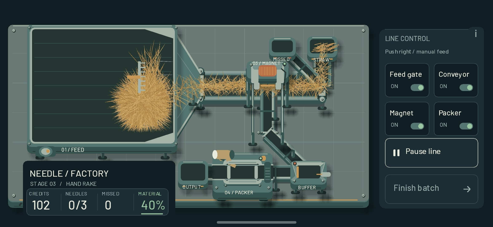
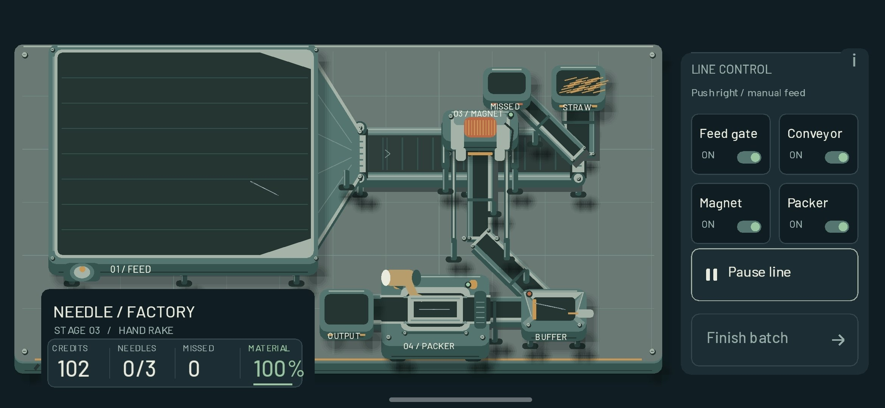

009 — Станки есть. Иголку видно. А где игра?
Устройств и точек взаимодействия стало больше, а вместе с ними — вопросов и несостыковок. Начать хотя бы с соломы: по отдельности пучки ещё выглядят терпимо, но стоит навалить их побольше, и на столе снова формируется настоящий волосатый шарик. Похоже, я изобрёл устойчивую форму жизни, которая переживает любую переделку графики.
Станков тоже стало много. Всё крутится, что-то куда-то едет, магнит работает, упаковщик занят. Смотрю на это хозяйство и задаю неприятный вопрос: ну работает и работает, а в чём игра-то? Пока вместо ответа у меня целый завод. Очень убедительная декорация для вопроса.
Отдельно пришлось повозиться с иголкой. Она была слишком тонкой и просто терялась. А сказать «сделай в цвет металла» — это примерно как пукнуть в воздух и ждать подробного технического задания. Металл бывает от белого до тёмно-серого, плюс ловит оттенки предметов вокруг. Пришлось разбираться не с названием цвета, а с тем, как иголка вообще выглядит. Теперь её наконец видно.
Ещё сделал грабли, чтобы удобнее таскать пучки сена, а не возиться с каждой соломинкой отдельно. И тут физическое пятно касания подкинуло сюрприз: с граблями теперь можно читерствовать. Потянул — и они сами запихивают сено в бункер. Уже не надо возить пальцем по экрану как умалишённый. Хотел дать игроку инструмент, а дал ему способ увильнуть от работы.
Записал это на видео. Материал в итоге собран на 100%, а иголки — 0/3. Получается, сено я научился убирать эффективнее, чем искать в нём иголки. Прекрасный момент вспомнить, какую игру я вообще собирался делать.
Фото и видео


009 — More Machines, a Visible Needle, and Still No Game
More devices and interaction points meant more questions and inconsistencies. Take the straw: individual bundles look tolerable, but pile up enough of them and a genuine hairball forms on the table again. Apparently, I have invented a resilient life form that survives every graphics revision.
There are more machines too. Everything turns, something goes somewhere, the magnet works, and the packer keeps busy. I look at the whole setup and ask an uncomfortable question: fine, it works — but where is the game? So far, my answer is an entire factory. A very convincing set for that question.
The needle needed attention as well. It was too thin and simply disappeared. Saying “make it metal-colored” is about as useful as farting into the wind and expecting a detailed specification. Metal ranges from white to dark gray, and picks up colors from nearby objects. I had to work out how the needle actually looks, rather than just naming a color. Now I can finally see it.
I also made a rake so I could move bundles of hay instead of fussing over individual stems. Then the physical touch area gave me a surprise: the rake can now be used to cheat. Pull it, and it keeps shoving hay into the hopper by itself. No more swiping across the screen like a maniac. I wanted to give the player a tool; I gave them a way to dodge the work.
I recorded it on video. Material collected ends up at 100%, while needles remain at 0/3. So I have learned to clear hay more efficiently than I can find needles in it. An excellent moment to remember what game I was trying to make.